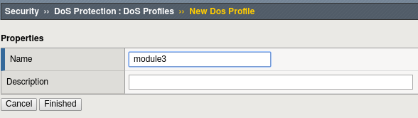
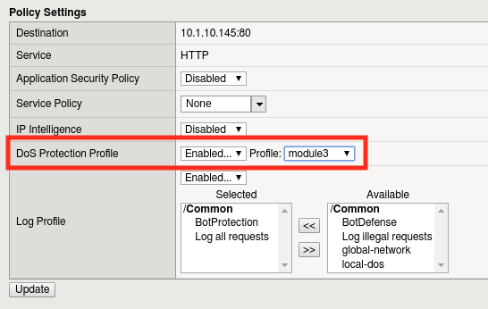

Lab 3.1: Bot Protection¶
In this lab we will investigate some of the features that comprise F5’s Advanced WAF.
Task 1 - Configuring Bot Defense¶
Browse to the BIGIP managemnet console.
Create a New ASM policy by navigating to Security -> Application Security -> Security Policies
- Click Create New Policy and fill in the page as follows, then click Create Policy

Now lets create a DoS profile to go along with our WAF policy
- Navigate to Security -> DoS Protection -> Dos Profiles and then click the Create button.

Click ‘Create’ to create a new DoS profile
Name the profile “module3” and click ‘Finished’
- Click the profile to configure.

- Select the ‘Application Security’ tab

- Click ‘Edit”, followed by the ‘Enabled’ checkbox to turn on Bot Detection.


- Let’s configure the types of bot protection that offer the best bang for the buck, starting with Signatures. Click the ‘Bot Signatures’ tab and click edit.

- Now click the ‘Enabled’ checkbox. You’ll see we can group bots by category or can select them uniquely.

Click ‘Edit’ to explore the settings further. Try to resist the urge to modify any settings, the defaults will serve us well.
- For complete protection, let’s go ahead an enable Proactive Bot Defense as well. Click on the ‘Proactive Bot Defense’ tab, click ‘Edit’, and change the dropdown to “During Attacks”.

Click ‘Update’ to save changes.
Now let’s bind this DoS policy to a Virtual Server. Navigate to Local Traffic -> Virtual Servers -> Virtual Server List and select ‘asm_vs’.
Click on ‘Security” tab and select ‘Policies’
- Enable the ‘Module3’ Application Security and DoS Protection profiles.

Click ‘Update’
Task 2 - Simulating Bot Traffic¶
- Now that we have a DoS profile in place, lets test it!
- Open a command prompt on your jumpbox.

- Execute the following command:
- python /opt/goldeneye.py http://10.1.10.145 -d -w 50 -s 200
- Wait 5 minutes for traffic generation and logging.
- In the BIG-IP WebUI, Navigate to Security -> Event Logs -> Application Events
- Review the attacks detected by ASM.